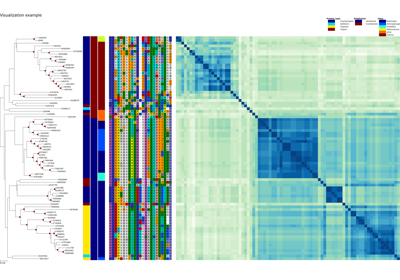

cocoatree.io.load_tree_ete3¶
- cocoatree.io.load_tree_ete3(file_path)[source]¶
From the loading of a Newick tree, generate a ete3.Tree object
The Newick file must be of the form: (A:1,(B:1,(C:1,D:1):0.5):0.5); or (A:1,(B:1,(C:1,D:1)95:0.5)98:0.5); if branch support values are available.
Parameters¶
file_path : path to the Newick file
Returns¶
tree_ete3 :
ete3.Treeobject
Examples using cocoatree.io.load_tree_ete3¶



Plot XCoR together with (phylogenetic) tree and metadata
Plot XCoR together with (phylogenetic) tree and metadata


Plot a similarity heatmap of a XCoR along the phylogenetic tree
Plot a similarity heatmap of a XCoR along the phylogenetic tree